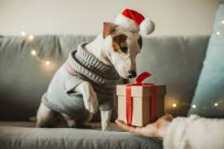
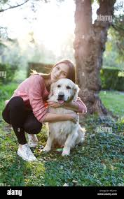

Wrapping That Makes Tails Wag!
Who’s Behind the Wag?
We’re a team of animal lovers and gift-givers who wanted to bring more joy (and safety!) to celebrations with our furry friends. After one too many gift wrap mishaps with curious pups and chewed-up bows, we knew there had to be a better way. So we wrapped up the idea of pet-safe wrapping paper—literally!

From Inspiration to Innovation
Wrap & Wag started as a simple idea during a family holiday gathering. Watching our dog dive nose-first into the presents sparked a question: why isn’t gift wrap made for pets too? That moment turned into months of testing eco-friendly, food-grade materials that could hold up to paws, teeth, and tails. With a little love and a lot of prototypes, our first pet-safe paper was born.
Our Passion, Your Celebration
This project is rooted in a deep love for pets and a passion for making memories. We believe pets are family, and they deserve to be part of the fun—without the worry. That’s why every sheet of Wrap & Wag is made with care, creativity, and a whole lot of tail-wagging excitement. We hope it brings as much joy to your home as it has to ours.

Contact Us:
Wrap&Wag@gmail.com
858-880-5647
Wrap&Wag@gmail.com
858-880-5647